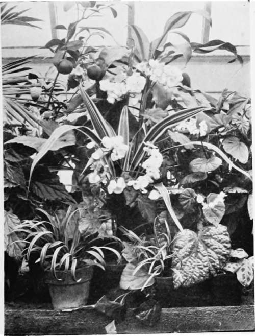

XXXIV. Room Decorations
Description
This section is from the book "Indoor Gardening", by Eben E. Rexford. Also available from Amazon: Indoor Gardening.
XXXIV. Room Decorations
IF one has plenty of material at her disposal it is a comparatively easy matter to decorate a room with growing plants. (Here is another argument in favor of the plant-room.) But if one is limited as to plants a good deal of study is often necessary in order to arrange the material one has in such a manner that it will show to the best advantage, and not have that "thin" look which characterizes most decorative schemes worked out with a few plants. Such a decoration is worse than none at all, and I would advise not attempting it. It will be safer to depend on a few good plants so disposed about the room that their individual beauty will be effectively displayed.
Still, most women are ambitious to make their rooms as attractive as possible, at times, and on special occasions, and it is quite the natural thing for them to attempt doing something along the decorative line with what plants they have. It is of course impossible for me to give any definite plan in this book because I have no means of knowing what material any reader will have to work with, but I will offer some suggestions that may be of some assistance.
If you want a bank of plants, look your rooms over well and decide where such a scheme as you feel justified in undertaking would be most effective. Then take inventory of your plants with a view to deciding how ambitious a scheme you are warranted in attempting. A simple one, well worked out, will always afford more pleasure than an elaborate one in which scarcity of proper material will be only too evident.
Of course it is understood that the ordinary bank of flowers and plants is constructed on foundations built up from boxes, plant-stands -anything that will enable one to secure a sort of step or stair effect, the aim being to elevate the plants in such a manner as to make all of them above the pot visible. The ordinary plant-stand of wood or wire, arranged with three or four rows of shelves, will give you the idea, if you are not familiar with this kind of work.
Begin with your best foliage plants at the bottom of your frame and work upward, using your best flowering plants in the center and at the top. If one has about as many foliage plants as flowering ones, alternate them, endeavoring to fill in the gaps between the latter with foliage in such a manner as to produce, as far as possible, a solid and substantial effect. If you have very few flowers it will be safest to concentrate them in the center of the bank, using your other plants to fill in about them and produce the effect of a background against which the flowers you have can display their beauty most effectively. Of course, as I have already said, I can simply suggest. It is for you to study the possibilities and evolve such a decorative scheme as seems most likely to give satisfaction. Make a trial of the several arrangements that suggest themselves to you before deciding on any. You can form a mental picture of your bank as you would like to have it, but you can only tell what can be done by experimenting with the plants available.
If there is a mantel in the room, and no fire in the grate, very pleasing effects can be secured with a few plants by concentrating them at this point.
Begonias And Foliage Plants.
Continue to: